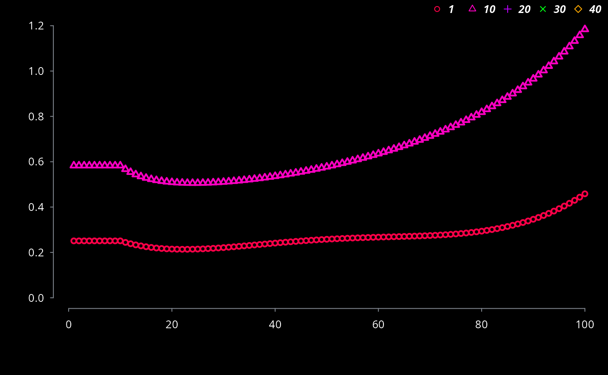
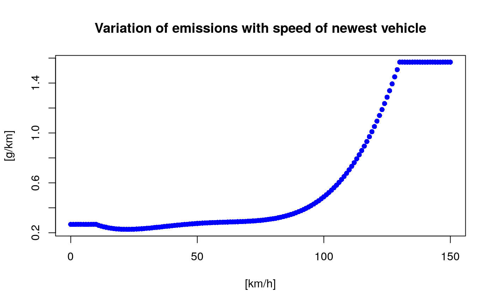

R/ef_ldv_scaled.R
This function creates a list of scaled functions of emission factors. A scaled emission factor which at a speed of the driving cycle (SDC) gives a desired value.
ef_ldv_scaled(df, dfcol, SDC = 34.12, v, t = "4S", cc, f, eu, p)
| df | Deprecated |
|---|---|
| dfcol | Column of the dataframe with the local emission factors eg df$dfcol |
| SDC | Speed of the driving cycle |
| v | Category vehicle: "PC", "LCV", "Motorcycle" or "Moped |
| t | Sub-category of of vehicle: PC: "ECE_1501", "ECE_1502", "ECE_1503", "ECE_1504" , "IMPROVED_CONVENTIONAL", "OPEN_LOOP", "ALL", "2S" or "4S". LCV: "4S", Motorcycle: "2S" or "4S". Moped: "2S" or "4S" |
| cc | Size of engine in cc: PC: "<=1400", ">1400", "1400_2000", ">2000", "<=800", "<=2000". Motorcycle: ">=50" (for "2S"), "<=250", "250_750", ">=750". Moped: "<=50". LCV : "<3.5" for gross weight. |
| f | Type of fuel: "G", "D", "LPG" or "FH" (Full Hybrid: starts by electric motor) |
| eu | Euro standard: "PRE", "I", "II", "III", "III+DPF", "IV", "V", "VI", "VIc" |
| p | Pollutant: "CO", "FC", "NOx", "HC" or "PM" |
A list of scaled emission factors g/km
This function calls "ef_ldv_speed" and calculate the specific k value, dividing the local emission factor by the respective speed emissions factor at the speed representative of the local emission factor, e.g. If the local emission factors were tested with the FTP-75 test procedure, SDC = 34.12 km/h.
The length of the list should be equal to the name of the age categories of a specific type of vehicle. Thanks to Glauber Camponogara by the help.
ef_ldv_seed
{ data(fe2015) co1 <- fe2015[fe2015$Pollutant=="CO", ] lef <- ef_ldv_scaled(co1, co1$PC_G, v = "PC", t = "4S", cc = "<=1400", f = "G", eu = co1$Euro_LDV, p = "CO") length(lef) lef[[1]](40) # First element of the lit of speed functions at 40 km/h lef[[36]](50) # 36th element of the lit of speed functions at 50 km/h plot(x = 0:150, y = lef[[36]](0:150), col = "red", type = "b", ylab = "[g/km]", pch = 16, xlab = "[km/h]", main = "Variation of emissions with speed of oldest vehicle") plot(x = 0:150, y = lef[[1]](0:150), col = "blue", type = "b", ylab = "[g/km]", pch = 16, xlab = "[km/h]", main = "Variation of emissions with speed of newest vehicle") }#> Warning: df is not needed